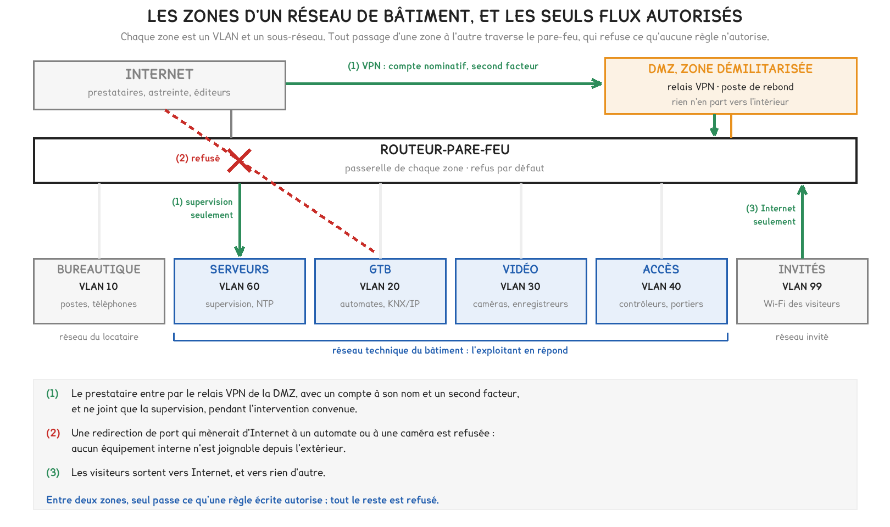
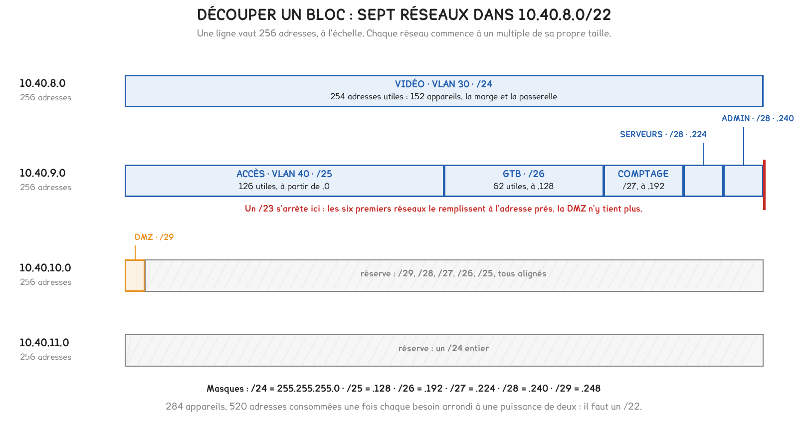

Document de formation du professeur — ne pas diffuser aux étudiants
Formation du professeur · BTS FED option C
Les identifiants d'un frigoriste chez Target, le thermomètre de l'aquarium d'un casino, les caméras du réseau Mirai, deux immeubles finlandais privés de chauffage et la GTB du bureau de Google à Sydney. Cinq incidents documentés, et la théorie que chacun oblige à tenir, de l'adresse IPv4 au budget PoE.
Savoirs travaillés
Le réseau IP d’un bâtiment tertiaire raccorde des équipements que personne ne tient pour des ordinateurs : un régulateur de chaufferie, une caméra, un contrôleur de porte, le thermomètre d’un aquarium. Les cinq incidents qui suivent sont réels et documentés ; chacun est entré par l’un de ces équipements, ou par le compte de l’entreprise qui les entretient.
Leur point commun tient en une phrase. Chaque fois, un équipement ou un compte du côté technique pouvait joindre ce qu’il n’avait aucune raison de joindre, ou être joint par qui n’avait aucune raison de le faire. Le mot de passe d’usine, la mise à jour oubliée, l’identifiant volé ne sont que des clés ; la porte était ouverte parce que le réseau ne disait pas qui a le droit de parler à qui.
| Cas | Ce qui a servi de porte | Ce qui manquait | La théorie qu’il oblige à tenir |
|---|---|---|---|
| Target, 2013 | les identifiants d’un prestataire de froid et de climatisation | un portail extérieur isolé du reste du réseau | commutateur, routeur, VLAN, pare-feu, DMZ |
| Un casino, 2017 | un aquarium connecté | un filtrage de ce qui sort | adresse, masque, passerelle, plan d’adressage |
| Google, Sydney, 2013 | une GTB joignable depuis Internet | un accès distant maîtrisé | exposition, accès distant, mises à jour |
| Mirai, 2016 | des caméras et des enregistreurs | le changement des identifiants d’usine | services, identifiants, PoE |
| Lappeenranta, 2016 | une régulation de chauffage joignable | l’autonomie de la régulation | déni de service, mode dégradé |
Un réseau de bâtiment se conçoit comme une liste de conversations autorisées. Ce qui n’y figure pas doit être techniquement impossible, et pas seulement interdit : c’est le travail du plan d’adressage, des VLAN et du pare-feu.
Le référentiel place l’aspect matériel des réseaux au niveau 3 pour l’option C, l’aspect logiciel au niveau 2 et la « sécurité logicielle » du VDI au niveau 3 ; les deux autres options sont à 0 ou 1. Le binaire des masques et le découpage en sous-réseaux dépassent le niveau 2 : la fiche professeur de DOMA6 demande de ne pas les introduire en séance.
Selon le rapport de la majorité de la commission du Commerce du Sénat des États-Unis, rendu public le 25 mars 2014, les attaquants ont volé par un courriel piégé les identifiants de Fazio Mechanical Services, entreprise de chauffage, climatisation et froid de Pennsylvanie. Ils ouvraient un portail de fournisseurs, vraisemblablement la facturation Ariba, mal isolé du reste du réseau. Les attaquants ont atteint les terminaux de paiement : 40 millions de cartes et les données de 70 millions de clients ont été exposées. Le prestataire, cité par Brian Krebs, n’utilisait cette liaison que pour la facturation, les contrats et la gestion de projets.
Le cas circule sous la forme « Target piraté par sa climatisation ». Ce récit est faux, et sa correction est la leçon : aucun équipement de climatisation n’a été attaqué. Un compte fait pour déposer des factures a ouvert un réseau où il n’avait rien à faire. Le défaut tenait à l’architecture, et non au mot de passe, qui sera toujours volable.
Le commutateur relie les équipements d’un même réseau et aiguille les trames d’après l’adresse physique, dite MAC. Le routeur relie des réseaux différents d’après l’adresse IP. Le VLAN découpe un commutateur en plusieurs commutateurs logiques : deux ports de VLAN différents ne communiquent pas directement, et chaque VLAN porte son propre sous-réseau, avec sa passerelle.
Séparer en VLAN ne filtre rien : c’est le routeur qui relie les VLAN, et c’est donc sur lui que se décide ce qui passe. Un routeur qui laisse tout passer rend la segmentation décorative. Le rapport le constate : entrés par un compte de fournisseur, les attaquants sont passés des zones les moins sensibles à celles qui portaient les données des clients.
Le pare-feu applique des règles écrites flux par flux : source, destination, protocole et port, sens, décision ; la dernière règle refuse tout ce que les précédentes n’ont pas autorisé. La zone démilitarisée, ou DMZ, reçoit ce qui doit être joignable de l’extérieur : un portail de fournisseurs, un relais VPN, un poste de rebond. Aucune connexion n’en part vers l’intérieur, sauf celle, unique, qu’on a écrite.

Pour aller plus loin
La matrice se remplit avant le câblage, à partir de l’inventaire, et produit les règles du pare-feu. Ce qui n’y figure pas est refusé.
| De | Vers | Ce qui passe |
|---|---|---|
| Vidéo : caméras | Vidéo : enregistreurs | le flux vidéo, sans traverser le pare-feu |
| Serveurs : supervision | GTB : automates | BACnet/IP, Modbus/TCP |
| Accès : contrôleurs | Serveurs : supervision | événements et alarmes de porte |
| Bureautique : poste d’accueil | Vidéo : un enregistreur | la consultation des images |
| DMZ : poste de rebond | Serveurs : supervision | l’interface d’exploitation |
| VLAN techniques | Serveurs : heure | NTP |
| Invités | Internet | la navigation, et rien d’autre |
Deux absences sont voulues : aucun VLAN technique ne sort vers Internet, et la bureautique n’atteint ni la GTB ni le contrôle d’accès, pour qu’un poste compromis par une pièce jointe ne puisse pas ouvrir une porte.
En classe. En DOMA6, « le réseau IP du bâtiment », le cas répond mieux qu’une liste de raisons à la question d), où le maître d’ouvrage demande pourquoi deux réseaux. En DOMA16, « analyser le risque, zoner le bâtiment », les six étapes se lisent comme une analyse de risques menée à l’envers. La question à poser : « De quoi le frigoriste avait-il besoin, et à quoi avait-il accès ? » L’écart entre les deux colonnes est la faute.
L’incident n’est connu que par l’éditeur Darktrace, qui vend l’outil de détection qui l’a repéré : c’est une source commerciale, et le casino n’est pas nommé. Selon son rapport de juillet 2017, rapporté par SecurityWeek, un casino d’Amérique du Nord avait installé un aquarium à capteurs, raccordé par un VPN pour l’isoler. Environ 10 Go de données sont sortis par l’aquarium vers un appareil situé en Finlande, sur un protocole habituellement réservé à l’audio et à la vidéo.
Tout équipement IP reçoit trois réglages : une adresse, un masque, une passerelle. Pour chaque paquet, il applique le masque à sa propre adresse et à celle du destinataire : si les résultats sont égaux, il parle directement au destinataire ; sinon, il remet le paquet à la passerelle. La passerelle est le seul chemin vers tout ce qui n’est pas le réseau local : c’est sur elle que se décide ce qu’un objet a le droit de dire au monde.
réseau = adresse ET masque
254 en /24, 62 en /26, 14 en /28 : l’adresse du réseau et celle de diffusion sont retirées. La RFC 3021 fait exception pour les liaisons point à point en /31.
Pour aller plus loin
Soit une caméra en 192.168.20.75, masque 255.255.255.192, soit /26. Les trois premiers octets du masque valent 255 et recopient l’adresse ; tout se joue sur le dernier. 75 s’écrit 01001011, 192 s’écrit 11000000 : le ET donne 01000000, soit 64. La caméra est dans 192.168.20.64/26 : équipements de .65 à .126, diffusion en .127. L’enregistreur, en 192.168.20.11, donne 11 ET 192 = 0 : il est dans un autre réseau, et la caméra passe par la passerelle pour le joindre.
En /24, le masque coupe entre deux octets et le calcul se fait à l’œil, comme en DOMA6 ; en /26, il coupe au milieu d’un octet et il faut le binaire. C’est pourquoi le niveau 2 s’arrête au /24.
Le plan d’adressage de DOMA6 range chaque famille d’équipements dans une plage du dernier octet. Il sert à reconnaître un équipement à son adresse, et surtout à écrire des règles courtes : « la plage des caméras ne parle qu’à l’enregistreur » tient en une ligne. Avec un sous-réseau par famille, la même règle porte sur un réseau entier et survit à l’ajout d’une caméra.
Un objet technique a peu d’interlocuteurs, et on les connaît. Ce qui sort d’un VLAN technique se filtre donc par liste blanche : la supervision, le serveur d’heure, éventuellement le serveur du fabricant, et rien d’autre. L’aquarium n’avait aucune raison de parler à la Finlande.
Pour aller plus loin
En 2017, le rapport décrit un attaquant déjà dans le réseau, qui se sert du tunnel de l’aquarium comme d’une sortie. En 2018, la présidente de l’éditeur décrit le thermomètre comme une entrée. Rien dans les sources ouvertes ne permet de trancher.
Ce qui reste établi suffit au cours : un objet raccordé par un tunnel qui devait l’isoler a laissé passer un volume sans rapport avec sa fonction, et la destination inhabituelle l’a trahi. La leçon tient dans les deux versions, et le cas enseigne aussi une méthode : une source commerciale se cite comme telle, et deux récits divergents se signalent.
En classe. En DOMA6, partie 2, le cas donne au plan d’adressage une seconde raison d’être, écrire des règles. En DOMB6, « commutateur, plan d’adressage, PoE : mettre un réseau en service », une passerelle volontairement fausse fait constater que l’image arrive et que l’alerte ne part pas. La question à poser : « Un aquarium connecté arrive dans le hall : dans quelle plage le mettre, et à qui a-t-il le droit de parler ? »
Selon SecurityWeek et Threatpost, en mai 2013, deux chercheurs de Cylance, Billy Rios et Terry McCorkle, ont trouvé parmi les systèmes Tridium Niagara joignables sur Internet celui du bureau de Google à Sydney, dans l’immeuble Wharf 7. Prévenu, Google a retiré le système d’Internet. Cylance comptait plus de 25 000 systèmes semblables exposés.
Un équipement est exposé quand l’un de ses services répond depuis Internet : une interface web, un port BACnet/IP, un Telnet. Une adresse privée, au sens de la RFC 1918, ne l’est pas par elle-même, puisque ces adresses ne sont pas routées sur Internet. L’exposition naît d’un geste, la redirection de port posée sur le routeur « pour intervenir à distance », ou d’un automatisme, l’UPnP, par lequel l’équipement demande lui-même au routeur de lui ouvrir un port.
Une fois exposé, un équipement est trouvé : les chercheurs ne cherchaient pas Google, leur recensement a fait apparaître son nom, et les 2³² adresses IPv4 ne cachent rien à une machine. Un bon mot de passe ne protège pas d’une faille qui permet de le lire : à Wharf 7, rien n’a été deviné. Une interface d’administration ne doit pas être seulement protégée ; elle ne doit pas être joignable.
Pour aller plus loin
La redirection de port vers l’interface. Tout Internet la voit, et sa sécurité est celle du logiciel le moins à jour : c’est Wharf 7.
Le service de connexion du fabricant. L’équipement ouvre une connexion sortante vers un serveur du fabricant, par où passe le technicien. Aucun port n’est ouvert, mais la sécurité du bâtiment dépend des comptes et des serveurs du fabricant.
Le VPN qui aboutit dans la DMZ. Un compte à son nom par technicien, un second facteur, un poste de rebond qui seul atteint la supervision, un accès ouvert à la demande, des connexions journalisées : c’est la figure des zones. Un VPN ouvert en permanence avec un compte partagé reproduit le cas Target.
L’ANSSI a mis en ligne le 4 juin 2026 ses « Recommandations de sécurité relatives à la gestion technique et centralisée du bâtiment (GTB/GTC) », qui portent sur les architectures déployées, exemples hospitaliers à l’appui, et valent pour tous les secteurs. Selon un intégrateur, source commerciale, le guide compte vingt-six recommandations et deux annexes sur le filtrage de BACnet/IP et de Modbus ; le texte se relit sur le site de l’ANSSI avant d’être cité dans un CCTP. Son lien avec l’obligation d’automatiser les bâtiments tertiaires relève du cours 6.
Déplacer l’interface du port 80 vers le port 8081 ne la cache pas. Une adresse n’a que 65 535 ports, et un balayage les essaie tous. La seule interface qu’on ne trouve pas depuis Internet est celle qui n’y répond pas.
En classe. En DOMA25, « la GTB : supervision, hypervision, alarmes techniques », le cas montre que la supervision est aussi une porte. En DOMB26, « GTB : bâtir un synoptique, régler les alarmes », l’accès distant au synoptique se prépare comme une règle de pare-feu, jamais comme une redirection de port. La question à poser : « L’intégrateur demande d’ouvrir le port 443 du superviseur sur Internet. Que lui répondre, et que lui proposer ? »
Selon l’alerte TA16-288A de la CISA, l’agence américaine de cybersécurité, du 14 octobre 2016, Mirai cherche sur Internet des routeurs, des caméras et des enregistreurs vidéo, et s’y connecte en Telnet, sur les ports 23 et 2323, avec 62 couples d’identifiants d’usine. En septembre 2016, il frappe le site du journaliste Brian Krebs à plus de 620 Gbit/s et l’hébergeur OVH à au moins 1,1 Tbit/s. Le 21 octobre, l’opérateur de noms de domaine Dyn subit deux vagues qui perturbent Twitter, Amazon, Reddit, Spotify et Netflix ; Dyn compte 100 000 appareils engagés au plus. Une étude publiée à USENIX Security en 2017 estime le pic du réseau à 600 000 appareils.
Mirai n’a exploité aucune faille savante : il a essayé 62 mots de passe. Tout y relève donc du geste de mise en service. Chez le fabricant XiongMai, dont les appareils étaient au cœur de l’attaque contre Dyn selon la société Flashpoint, le mot de passe changé dans l’interface web ne changeait pas celui du Telnet, inscrit en dur dans le micrologiciel. Un équipement porte plusieurs services, et chacun est une porte, y compris ceux que l’installateur ne voit jamais.
La mise en service d’une caméra comporte donc trois gestes, dans cet ordre : fermer les services inutiles, changer tous les identifiants, installer le dernier micrologiciel. Le débit explique le choix des caméras : cent mille appareils à 10 Mbit/s font 1 Tbit/s, et une caméra est conçue pour émettre en continu ; personne ne s’étonne de la voir émettre.
Les caméras sont aussi, le plus souvent, le premier poste de puissance du réseau technique. Un commutateur PoE se choisit sur deux vérifications, que DOMA6 installe : chaque port fournit la puissance de la classe de l’équipement, et la somme des puissances réservées reste sous le budget. Le câble dissipe l’écart entre le port et l’équipement.
| Classe | Norme et type | Au port | À l’équipement | Écart, dissipé dans 100 m de câble |
|---|---|---|---|---|
| 1 | 802.3af, type 1 | 4,0 W | 3,84 W | 0,16 W |
| 2 | 802.3af, type 1 | 7,0 W | 6,49 W | 0,51 W |
| 3 | 802.3af, type 1 | 15,4 W | 12,95 W | 2,45 W |
| 4 | 802.3at, type 2 | 30 W | 25,5 W | 4,5 W |
| 5 | 802.3bt, type 3 | 45 W | 40 W | 5 W |
| 6 | 802.3bt, type 3 | 60 W | 51 W | 9 W |
| 7 | 802.3bt, type 4 | 75 W | 62 W | 13 W |
| 8 | 802.3bt, type 4 | 90 W | 71,3 W | 18,7 W |
Pour aller plus loin
Les normes IEEE sont payantes et n’ont pas été relues ; les valeurs de la table, tirées de documentations de fabricants, se reconstruisent avec trois hypothèses, ce qui vaut vérification : une tension minimale au port de 44 V en type 1, 50 V en types 2 et 3, 52 V en type 4 ; une résistance de boucle de 20 Ω en type 1, puis 12,5 Ω par jeu de paires ; un jeu de paires jusqu’au type 2, deux en 802.3bt.
Avec I = P / U, k jeux de paires et des pertes k × R × (I / k)² : classe 3, 0,35 A, pertes 2,45 W, reste 12,95 W ; classe 6, 1,2 A, soit 0,6 A par jeu, pertes 9 W, reste 51 W ; classe 8, 1,73 A, soit 0,87 A par jeu, pertes 18,7 W, reste 71,3 W.
Le 802.3bt existe à cause de ce carré. Les mêmes 60 W sur deux paires feraient passer 1,2 A dans 12,5 Ω : 18 W de pertes, 42 W à l’équipement. Deux jeux de paires divisent le courant de chacun par deux, et ses pertes par quatre.
Couper le port PoE d’une caméra infectée l’efface, et ne la guérit pas. Mirai réside en mémoire vive, que le redémarrage vide ; l’identifiant d’usine reste, et la caméra redevient une cible dès qu’elle répond de nouveau.
En classe. En DOMA19, « vidéosurveillance », puis en DOMB22, « vidéosurveillance : caméras IP, enregistreur, champs et stockage », la mise en service commence par les trois gestes, que la fiche de recette consigne. Le budget PoE se traite en DOMA6, activité 3, puis sur le commutateur de l’atelier en DOMB6. La question à poser : « La caméra a été redémarrée et filme de nouveau : est-elle saine ? » Le droit propre à la vidéo relève du cours 7.
Selon BleepingComputer, qui s’appuie sur la presse finlandaise, le chauffage et l’eau chaude de deux immeubles de Lappeenranta, gérés par la société Valtia, ont été coupés de la fin d’octobre au 3 novembre 2016 par un déni de service distribué, sous des températures négatives. Les automates redémarraient en boucle ; déconnectés d’Internet, ils ont fonctionné de nouveau, selon le directeur de Valtia, Simo Rounela. Pour l’autorité finlandaise des communications, citée par Yle le 8 novembre, ils n’étaient pas la cible : ils ont servi à amplifier une attaque contre un organisme européen, et leur surcharge en a été l’effet secondaire.
Un déni de service ne vole rien : il empêche, en saturant une liaison ou un processeur. Dans l’amplification, l’attaquant envoie à des milliers d’équipements une courte requête UDP portant l’adresse de sa victime en guise d’origine ; UDP ne la vérifie pas, et chacun renvoie à la victime une réponse beaucoup plus longue. Tout équipement qui répond ainsi depuis Internet devient l’arme d’une attaque contre un tiers.
débit reçu par la victime = débit des requêtes × facteur d’amplification
Valeurs de l’alerte TA14-017A de la CISA, qui recommande de refuser l’accès aux services locaux depuis Internet. Avec SSDP, 10 Mbit/s de requêtes deviennent 308 Mbit/s chez la victime.
Le second enseignement pèse davantage. La boucle de régulation, sonde, régulateur, vanne, se ferme dans l’automate local ; le réseau ne transporte que des consignes, des mesures et des alarmes. Sa perte doit laisser le régulateur continuer avec ses derniers réglages et lever une alarme de communication. À Lappeenranta, la régulation savait travailler seule, mais le trafic du réseau pouvait la faire tomber.
Une GTB supervise ; elle ne doit jamais être le maillon sans lequel le bâtiment ne chauffe plus. Perte de liaison ou flot de trafic, rien de ce qui arrive par le réseau ne doit arrêter la boucle locale.
Pour aller plus loin
Trois comportements se spécifient au CCTP. Garder les derniers réglages : loi d’eau, consignes et plages horaires restent dans l’automate. Replier sur une valeur choisie à l’avance ce qui dépend d’une information distante. Signaler sans s’effondrer : la supervision lève une alarme de communication, et l’automate ne redémarre pas parce que son port réseau est inondé, ce qui a manqué en Finlande. L’essai de recette tient en trois minutes : débrancher le câble réseau, relever ce que fait la vanne, rebrancher, vérifier l’alarme.
En classe. Le cas relie DOMA21, « réguler : boucles, TOR, proportionnel, intermittence », où la boucle fermée localement devient une exigence de sûreté de fonctionnement, et DOMA25, où la supervision apprend à signaler une perte de communication. En DOMB24, « régulation : régler une boucle », l’essai du câble débranché s’ajoute aux relevés. La question à poser : « Le lien vers la supervision tombe un soir de janvier : que fait la chaufferie ? »
Les cinq cas appellent une méthode de périmètre : séparer les zones, filtrer les passages, ne rien exposer. Elle suppose l’attaquant dehors. Chez Target, il s’est présenté avec le compte d’un fournisseur, sur un portail fait pour être joint ; au casino, il est passé par le tunnel qui devait isoler l’aquarium. Aucun pare-feu ne refuse un compte valide sur un chemin autorisé. La question n’est plus « où est la frontière », mais « qui parle à qui, avec quel droit, et est-ce normal ».
| Raisonnement de périmètre | Raisonnement par flux et par compte | |
|---|---|---|
| L’unité de décision | la zone | le compte, et le flux qu’il ouvre |
| Un prestataire | entre dans la zone technique | atteint une application, pendant l’intervention |
| Le mot de passe | protège l’entrée | ne suffit plus : second facteur |
| Ce qui se surveille | les tentatives refusées | les accès réussis, leur volume, leur destination |
Trois outils portent ce raisonnement : le moindre privilège, une application par compte ; le second facteur, que Target exigeait rarement de ses petits prestataires selon le rapport du Sénat ; la détection, qui ne vaut que si quelqu’un lit les alertes, restées sans suite chez Target.
Pour aller plus loin
Un réseau bureautique est imprévisible ; un réseau technique est d’une régularité parfaite : un thermomètre parle à une ou deux adresses, au même rythme, avec des messages de même taille. Sous l’hypothèse d’un relevé de 100 octets par minute, il émet 144 000 octets par jour. Les 10 Go du casino représentent environ 69 000 jours de ce trafic, soit 190 ans. Rien n’a besoin d’être déchiffré : le volume, la destination et l’heure suffisent, et une alarme sur toute destination nouvelle d’un VLAN technique coûte peu.
DOMA6 vérifie un plan d’adressage donné. Le bureau d’études fait l’inverse : il construit les sous-réseaux à partir d’un bloc et des usages, et il choisit les commutateurs à partir des caméras. L’immeuble qui suit, six niveaux de bureaux, est un cas d’étude construit pour le calcul.
Découper le bloc. Ce qui est fixé : les effectifs, une marge de 25 %, une passerelle par sous-réseau, et l’alignement, qui fait commencer chaque réseau à un multiple de sa taille. Ce qui est libre : la taille de chaque sous-réseau, leur ordre, et la taille du bloc à demander au service informatique du propriétaire.
| VLAN | Usage | Appareils | Avec 25 % | Avec la passerelle | Préfixe | Adresses utiles |
|---|---|---|---|---|---|---|
| 30 | Vidéo : caméras et enregistreurs | 152 | 190 | 191 | /24 | 254 |
| 40 | Accès et interphonie | 58 | 73 | 74 | /25 | 126 |
| 20 | GTB : automates, passerelles KNX/IP | 36 | 45 | 46 | /26 | 62 |
| 50 | Comptage | 21 | 27 | 28 | /27 | 30 |
| 60 | Serveurs techniques | 6 | 8 | 9 | /28 | 14 |
| 90 | Administration du réseau | 9 | 12 | 13 | /28 | 14 |
| 100 | DMZ des prestataires | 2 | 3 | 4 | /29 | 6 |
| Total | 284 | 365 | 520 adresses consommées |
Le service informatique propose un /23, 512 adresses, puisque 284 appareils y tiennent largement. Le calcul montre le contraire : chaque besoin arrondi à la puissance de deux supérieure, les sept réseaux consomment 520 adresses. Les six premiers remplissent le /23 à l’adresse près, la DMZ n’y tient plus, et il ne reste aucune réserve. La bonne demande est un /22, 1 024 adresses, qui laisse 504 adresses de réserve, alignées.

Pour aller plus loin
| VLAN | Réseau | Masque | Passerelle | Équipements | Diffusion |
|---|---|---|---|---|---|
| 30 | 10.40.8.0/24 | 255.255.255.0 | 10.40.8.1 | .2 à .254 | 10.40.8.255 |
| 40 | 10.40.9.0/25 | 255.255.255.128 | 10.40.9.1 | .2 à .126 | 10.40.9.127 |
| 20 | 10.40.9.128/26 | 255.255.255.192 | 10.40.9.129 | .130 à .190 | 10.40.9.191 |
| 50 | 10.40.9.192/27 | 255.255.255.224 | 10.40.9.193 | .194 à .222 | 10.40.9.223 |
| 60 | 10.40.9.224/28 | 255.255.255.240 | 10.40.9.225 | .226 à .238 | 10.40.9.239 |
| 90 | 10.40.9.240/28 | 255.255.255.240 | 10.40.9.241 | .242 à .254 | 10.40.9.255 |
| 100 | 10.40.10.0/29 | 255.255.255.248 | 10.40.10.1 | .2 à .6 | 10.40.10.7 |
La réserve court de 10.40.10.8 à 10.40.11.255 : 8 + 16 + 32 + 64 + 128 + 256 = 504 adresses, en blocs alignés.
On alloue du plus grand au plus petit : chaque taille divise la précédente, et chaque bloc tombe sur une limite alignée, sans trou. Dans l’ordre inverse, la DMZ placée en 10.40.8.0/29 repousse la vidéo en 10.40.9.0 et laisse 248 adresses à combler au compte-gouttes. Le service informatique donne un bloc, et non des /24 épars, pour annoncer le bâtiment par une seule route, 10.40.8.0/22 : c’est l’agrégation de la RFC 4632.
Dimensionner les commutateurs PoE. Au local technique du troisième étage, le plan fixe 22 dômes intérieurs de classe 2, 4 caméras extérieures à infrarouge et chauffage de classe 4, une caméra motorisée de classe 6 et 3 contrôleurs de porte de classe 3, tous à moins de 90 m de la baie. Ce qui est libre : le nombre de commutateurs, leur budget, et la répartition des équipements.
| Équipements | Nombre | Classe | Réservé par port | Total |
|---|---|---|---|---|
| Dômes intérieurs | 22 | 2 | 7,0 W | 154,0 W |
| Caméras extérieures | 4 | 4 | 30 W | 120,0 W |
| Caméra motorisée | 1 | 6 | 60 W | 60,0 W |
| Contrôleurs de porte | 3 | 3 | 15,4 W | 46,2 W |
| Total | 30 | 380,2 W |
Avec 20 % de réserve, le budget atteint 456,2 W sur 30 ports PoE, dont un port de 60 W. Un commutateur de 48 ports suffirait ; deux valent mieux, si l’on y répartit les dômes d’une même zone un sur deux : une panne n’aveugle plus qu’environ une caméra sur deux. On dimensionne à la classe, et ces 380,2 W, avec la consommation propre des commutateurs, sont ce que l’onduleur de la baie doit secourir.
| Commutateur | Ce qu’il alimente | Réservé | Avec 20 % | Ports PoE |
|---|---|---|---|---|
| A | 11 dômes, 2 caméras extérieures, 2 portes | 167,8 W | 201,4 W | 15 |
| B | 11 dômes, 2 caméras extérieures, la motorisée, 1 porte | 212,4 W | 254,9 W | 15, dont un de 60 W |
Pour aller plus loin
Énoncé. Dans l’immeuble du calcul retourné, le thermomètre d’un aquarium est réglé en 10.40.9.140, masque 255.255.255.192, passerelle 10.40.9.129 ; le serveur de supervision est en 10.40.9.226. a) Dans quel réseau est le thermomètre ? b) Joint-il directement le serveur ? c) Qu’arrive-t-il si l’installateur saisit le masque 255.255.255.0 ?
Résolution. a) 140 s’écrit 10001100, 192 s’écrit 11000000 : le ET donne 10000000, soit 128. Le thermomètre est dans 10.40.9.128/26, le VLAN de la GTB. b) 226 ET 192 donne 192 : le serveur est dans 10.40.9.224/28. Le paquet passe par la passerelle, et le pare-feu porte une seule règle, thermomètre vers supervision. c) En /24, le thermomètre croit le serveur dans son réseau et le cherche par une requête ARP que le serveur, dans un autre VLAN, n’entend pas ; le reste part vers la passerelle. Il joint Internet si le pare-feu le laisse faire, et plus la supervision.
Vérification de plausibilité. La passerelle est la première adresse du /26, le thermomètre est dans la plage .130 à .190, et un équipement qui atteint l’extérieur mais pas son voisin a presque toujours un masque trop large.
Ce que l’étudiant doit rédiger. La même question en /24, comme en DOMA6, partie 3 : le réglage en cause, puis la conséquence constatée.
Énoncé. Un commutateur de 24 ports PoE+, à 30 W par port et 370 W de budget, alimente 12 dômes de classe 2 et 3 contrôleurs de classe 3 ; un port sert à la liaison montante. Combien de caméras de classe 4 accepte-t-il encore, a) en consommant tout le budget, b) en gardant 20 % de réserve ?
Résolution. Déjà réservé : 12 × 7,0 + 3 × 15,4 = 130,2 W. Ports libres : 24 − 15 − 1 = 8. a) Il reste 239,8 W, et 239,8 / 30 = 7,99 : sept caméras. La huitième demanderait 240 W, soit 0,2 W de trop : les ports en permettaient huit, le budget en permet sept. b) Le budget utilisable vaut 0,8 × 370 = 296 W ; il reste 165,8 W, et 165,8 / 30 = 5,5 : cinq caméras.
Vérification de plausibilité. À vide, 370 W alimentent 12 ports de classe 4 ; les 130,2 W réservés en valent un peu plus de 4 ; il en reste environ 8, et l’arrondi par défaut donne 7.
Ce que l’étudiant doit rédiger. Les deux limites chiffrées, celle des ports et celle du budget, celle qui s’impose, et la raison de l’arrondi par défaut : une caméra ne se branche pas à 99 %.
Énoncé. Dans un immeuble d’habitation, le routeur de l’accès Internet redirige les ports TCP 80 et UDP 47808 vers le régulateur de la chaufferie, qui accepte le compte d’usine et dont le micrologiciel a quatre ans. Le chauffagiste veut garder « son » accès, deux heures par mois. Rédiger la proposition au syndic : a) les expositions ; b) l’architecture ; c) le comportement si le réseau tombe.
a) Trois expositions. L’interface web et son compte d’usine laissent n’importe qui modifier les consignes : c’est Wharf 7 sans même une faille. Le port 47808 expose BACnet/IP, qui ne vérifie pas l’émetteur, et un régulateur qui répond sur Internet peut être saturé ou détourné, comme à Lappeenranta. Un micrologiciel de quatre ans porte vraisemblablement des failles publiées depuis.
b) L’architecture. Supprimer les deux redirections ; placer le régulateur dans un VLAN technique, en 192.168.20.20, comme en DOMA6 ; changer le compte d’usine, mettre à jour le micrologiciel ; ouvrir l’accès distant par un VPN sur le routeur-pare-feu, un compte à son nom par technicien, un second facteur, à la demande.
| Règle | Source | Destination | Service | Décision |
|---|---|---|---|---|
| 1 | comptes VPN du chauffagiste | régulateur 192.168.20.20 | HTTPS | autorisée pendant l’intervention |
| 2 | régulateur | serveur d’heure | NTP | autorisée |
| 3 | Internet | réseau technique | tout | refusée |
| 4 | réseau technique | Internet | tout | refusée |
| 5 | tout | tout | tout | refusée |
c) Le repli. Le régulateur calcule la loi d’eau à partir de sa sonde extérieure ; la perte du réseau ne change rien au chauffage, et la supervision affiche une alarme de communication. L’essai du câble débranché figure au procès-verbal.
Vérification de plausibilité. Une redirection permanente ouvre la porte environ 730 heures par mois, l’accès à la demande deux heures, soit 0,27 % du temps ; le chauffagiste garde son accès, et rien n’est acheté si le routeur sait établir un VPN.
Ce que l’étudiant doit rédiger. Chaque exposition avec sa conséquence, et non « c’est dangereux » ; le tableau des règles, dernière ligne comprise ; la phrase de repli ; une note que le syndic peut lire sans connaître le mot VLAN.
| Grandeur | Ordre de grandeur |
|---|---|
| Adresses IPv4 en tout | 2³² = 4 294 967 296 : un balayage complet est à la portée d’une machine |
| Adresses utiles d’un /n | 2^(32 − n) − 2 : 254 en /24, 126 en /25, 62 en /26, 30 en /27, 14 en /28, 6 en /29 |
| Blocs privés de la RFC 1918 | 10/8 : 16 777 216 · 172.16/12 : 1 048 576 · 192.168/16 : 65 536 adresses |
| Ports TCP ou UDP d’une adresse | 65 535 |
| Puissance au port, 802.3af · at · bt | 15,4 W · 30 W · 60 ou 90 W |
| Puissance à l’équipement | 12,95 W · 25,5 W · 51 ou 71,3 W |
| 24 ports en classe 4 | 720 W de budget ; 370 W n’en alimentent que 12 |
| Identifiants essayés par Mirai | 62 couples |
| Pic du réseau Mirai | environ 600 000 appareils infectés |
| Appareils engagés contre Dyn | 100 000 au plus |
| Attaques de septembre 2016 | plus de 620 Gbit/s contre KrebsOnSecurity · au moins 1,1 Tbit/s contre OVH, soit 11 Mbit/s par appareil pour 100 000 appareils |
| Facteurs d’amplification relevés par la CISA | SNMPv2 6,3 · SSDP 30,8 · NTP 556,9 |
| Systèmes Tridium Niagara exposés, recensés en 2013 | plus de 25 000 |
| Target, de la première connexion | 20 jours jusqu’à la fuite des données, 30 jusqu’à l’alerte extérieure |
| Target, données exposées | 40 millions de cartes · 70 millions de clients |
| Casino, données sorties | 10 Go, soit 190 ans d’un relevé de 100 octets par minute |
| Télémaintenance d’une chaufferie | 2 heures d’ouverture par mois, contre 730 pour une redirection permanente |
Deux réflexes suffisent à trier la plupart des affirmations. Une adresse privée ne dit rien de l’exposition : seule la configuration du routeur le dit. Un budget PoE se compare à la somme des classes, jamais au nombre de ports.
Pour aller plus loin
L’adresse privée n’est pas routée sur Internet ; elle ne dit rien pour autant de ce que le routeur laisse passer. Trois mécanismes rendent une caméra joignable malgré elle : la redirection de port posée pour voir les images sur un téléphone, l’UPnP, que la CISA recommande de désactiver sur les routeurs, et le service de connexion du fabricant, qu’on emprunte en sens inverse. Mirai a trouvé environ 600 000 appareils avec 62 couples d’identifiants, et aucun n’était « sur Internet » aux yeux de son propriétaire.
Personne ne le demande. Il s’agit de lui donner l’accès dont il a besoin, et pas davantage : une application, un compte à son nom, un second facteur, une durée. Chez Target, le compte du frigoriste servait à déposer des factures, et il a mené à 40 millions de cartes. Un chauffagiste qui intervient deux heures par mois n’a pas besoin d’une porte ouverte 730 heures : l’accès à la demande réduit l’exposition à 0,27 % du temps, sans rien lui retirer.
Parce qu’elle s’annonce en classe 3 à la connexion, et qu’un commutateur réglé pour réserver à la classe lui attribue ce que la classe garantit. La fiche donne une consommation typique ; la classe donne le plafond, celui des nuits froides où l’infrarouge et le chauffage fonctionnent ensemble. 24 caméras de ce type réservent 24 × 15,4 = 369,6 W, tout un budget de 370 W, pour 24 × 5 = 120 W de consommation typique. Réserver à la consommation mesurée en fait entrer davantage, et la première nuit froide, le commutateur coupera les ports les moins prioritaires.
Le chauffage mène à la banque : chez Target, le compte d’un frigoriste a ouvert la route vers 40 millions de cartes. Le chauffage compte par lui-même : à Lappeenranta, deux immeubles ont perdu chauffage et eau chaude par des températures négatives, et l’expert de l’agence finlandaise de sécurité des approvisionnements cité par Yle estime que ces attaques peuvent menacer des vies. Le chauffage sert d’arme : cent mille appareils à 10 Mbit/s font 1 Tbit/s. La phrase à laisser aux étudiants : l’attaquant ne choisit pas un équipement pour ce qu’il commande, mais pour ce qu’il ouvre.
Le référentiel du BTS FED, pages 71 à 74, et la séance DOMA6 ont fourni les niveaux et le plan d’adressage de référence. Sources consultées le 13 septembre 2026.
Page de formation, réservée au professeur. Elle s'appuie sur des cas réels documentés ; les sources sont données en fin de page.